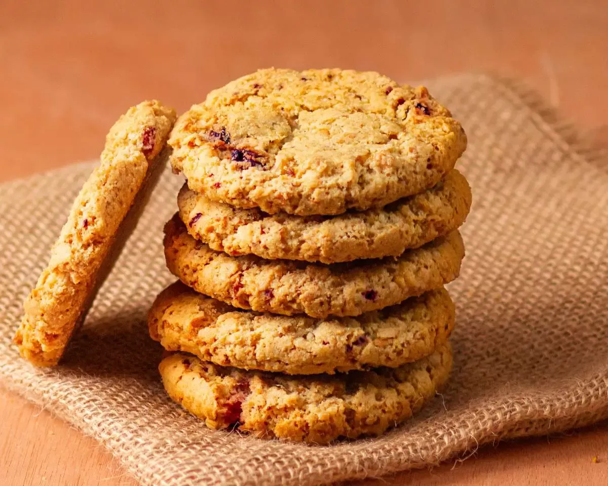

Acá le ponemos onda para incorporar alimentos saludables de la mejor manera y con el mejor sabor!
Galletas de Avena
Esta opción es ideal para quienes no nos gusta comprar galletas industriales compradas en el supermercado.
Hay quienes acostumbran a hacerlo, y a ustedes, a los que aún no se animaron a cocinarlas en casa, les digo:
esta receta de galletas de avena es tan fácil, rápida de preparar, y queda tan deliciosa que les va a cambiar la vida.
No irán más a comprar éste tipo de galletas, basta con tener algunos ingredientes a mano y poner manos a la obra.

Ingredientes (Para unas 20 galletas de avena)
Copos de avena: 115g
Harina: 50g
Azúcar negra o blanca: 75g
Aceite de maíz: 50ml
1 huevo
1 pizca de sal
1 cucharadita de escencia de vainilla
Pasito a Pasito
Batir el huevo y mezclarlo con el azúcar hasta que quede una preparación cremosa.
Agregar el aceite y la esencia de vainilla y unir bien.
Incorporar la harina, la pizca de sal y los copos de avena. Unir bien con las manos hasta que quede una masa compacta.
Llevar a la heladera unos 20 minutos hasta que la masa para las galletas esté bien fresca.
Con las manos untadas con un poco de aceite, formar bolitas y aplastarlas formando las galletas de avena. Colocarlas en una fuente de horno. No hace falta que tenga manteca o aceite.
Hornear unos 10-12 minutos a 180ºC, hasta que las galletas de avena vean doradas por debajo (si se ven hechas por arriba, pueden quemarse abajo). No te hagas problema si al sacarlas parecen un poco blandas: algo importante sobre esta receta de galletas de avena es que tienen un truco para que queden crujientes y es que al enfriarse se endurecen y quedan crocantes
Hasta aquí llegó la receta, recordá: Comer sano también es rico, espero que lo hayan disfrutado!